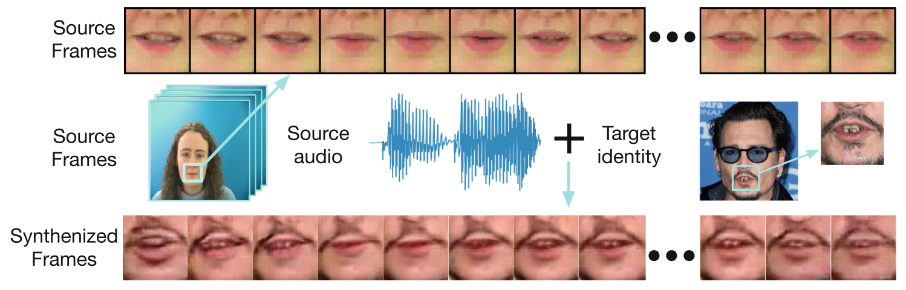
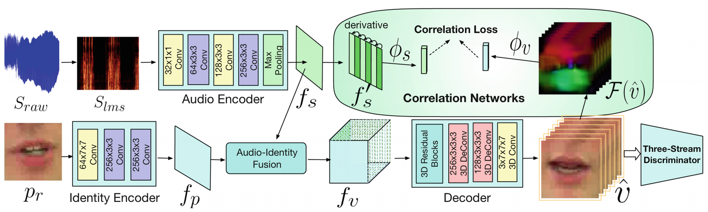
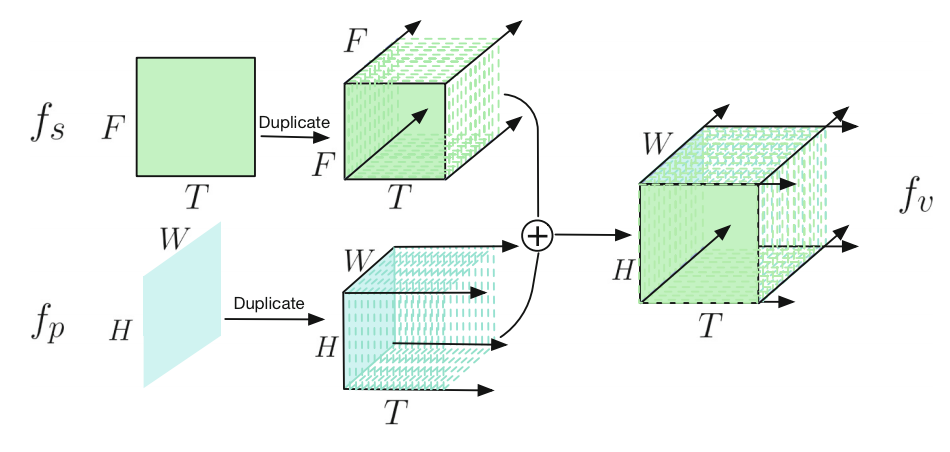
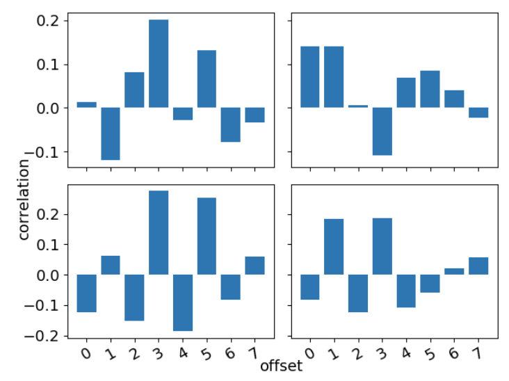
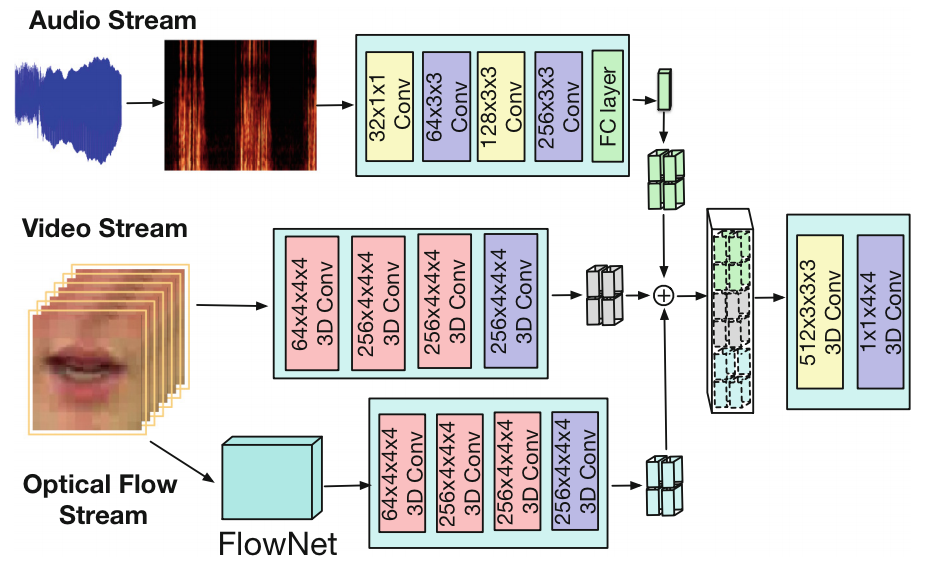
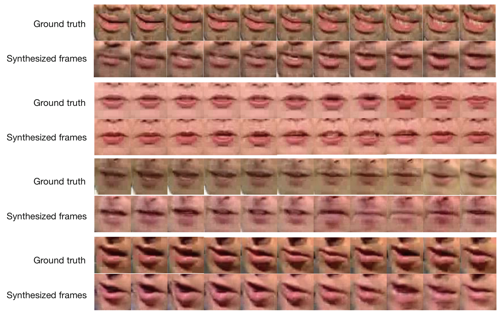
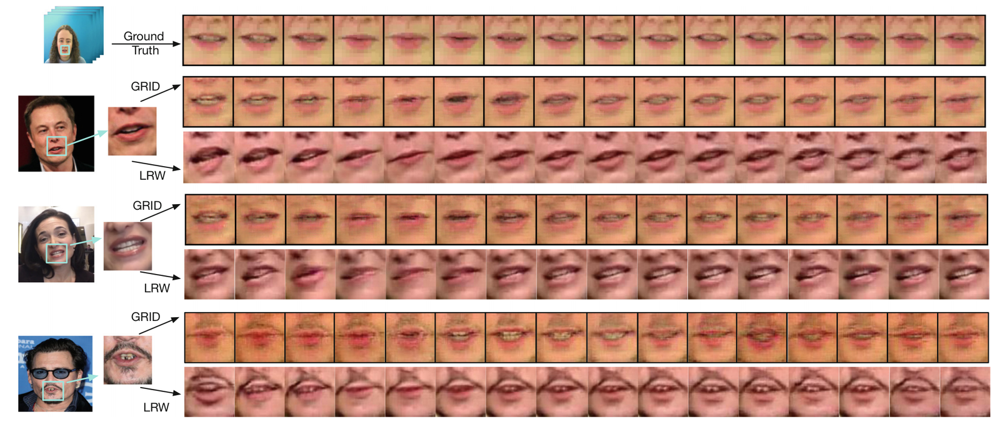

This paper considers a task: given an arbitrary audio speech and one lip image of arbitrary target identity, generate synthesized lip movements of the target identity saying the speech. Notice that the speech does not have to be spoken by the target identity, and neither the speech nor the image of target identity is required to be appeared in the training set. Solving this task is crucial to many applications, e.g., enhancing speech comprehension while preserving privacy or assistive devices for hearing impaired people.

Figure: The model takes an audio speech of the women and one lip image of the target identity, a male celebrity in this case, and synthesizes a video of the mans lip saying the same speech. The synthesized lip movements need to correspond to the speech audio and also maintain the target identity, video smoothness and sharpness.
To perform well in this task, a model needs to not only consider the retention of target identity, photo-realistic of synthesized images, consistency and smoothness of lip images in a sequence, but more importantly, learn the correlations between audio speech and lip movements.
To solve the collective problems, we devise a network to synthesize lip movements and propose a novel correlation loss to synchronize lip changes and speech changes. Our full model utilizes four losses for a comprehensive consideration; it is trained end-to-end and is robust to lip shapes, view angles and different facial characteristics.

Figure: Full model illustration. Audio encoder and identity encoder extracts and fuses audio and visual embeddings. Audio-Identity fusion network fuses features from two modalities. Decoder expands fused feature to synthesized video. Correlation Networks are in charge of strengthening the audio-visual mapping. Three-Stream discriminator is responsible for distinguishing generated video and real video.

Figure: Transfer audio time-frequency features and image spatial features to video spatial-temporal features.

Figure: Correlation coefficients with different offsets.

Figure: Three-stream GAN discriminator.

Figure: Randomly selected outputs of the full model on the LRW testing set. The lip shape in videos not only synchronize well with the ground truth, but maintain identity information, such as (beard v.s. no beard).

Figure: The figure shows the generated images based on three identity images outside of dataset, which is also not paired with the input audio from GRID dataset. Two full models trained on GRID and LRW datasets are used here for a comparison.